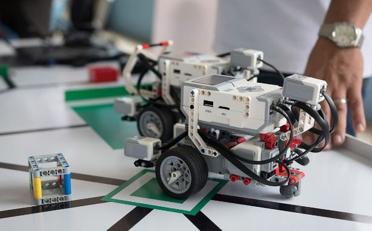

Ultimos Projectos


A Cw Foundation oferece serviços de desenvolvimento web e mobile, utilizando tecnologias modernas para criar aplicações eficientes e responsivas. Projetos Inovadores: A empresa trabalha com projetos de IoT (Internet das Coisas), Robótica, Inteligência Artificial e Redes de Computadores, focando em soluções inovadoras e avançadas.
A Cw Foundation oferece serviços de desenvolvimento web e mobile, utilizando tecnologias modernas para criar aplicações eficientes e responsivas.A empresa trabalha com projetos de IoT (Internet das Coisas), Robótica, Inteligência Artificial e Redes de Computadores, focando em soluções inovadoras e avançadas.
saber maisA Cw Foundation oferece serviços de desenvolvimento web e mobile, utilizando tecnologias modernas para criar aplicações eficientes e responsivas. Projetos Inovadores: A empresa trabalha com projetos de IoT (Internet das Coisas), Robótica, Inteligência Artificial e Redes de Computadores, focando em soluções inovadoras e avançadas.
saber mais
A Cw Foundation é uma empresa que se dedica ao desenvolvimento de soluções tecnológicas inovadoras. Aqui estão alguns pontos-chave sobre a organização...
Saber Mais